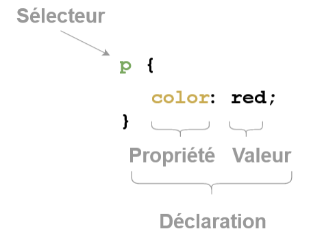

Mettre en forme : le CSS
Séparer le fond et la forme : un exemple avec un traitement de texte
Activité avec un traitement de texte
Les intitulés exacts des menus dépendent de la version de LibreOffice utilisée. Il faudra donc vous adapter en essayant de trouver le bon menu pour chaque situation.
- Téléchargez puis ouvrez le fichier
Styles_et_modèles.odtavec Libre Office. - Allez à la page 7 du document.
- Ouvrez la fenêtre de style en appuyant sur F11.
- Dans la page, cliquez sur le titre « Qu'est-ce qu'un modèle ?».
- Dans la fenêtre de style, cliquez droit sur
Titre 1, puismodifier. - Passez la couleur de la police en rouge, puis activez un surlignage simple en jaune. Validez puis observez le document, en regardant les pages suivantes.
- Quelles parties ont été changées ?
- Y-a-t-il eu des changements sur d'autres pages ?
- Qu'ont en commun toutes les zones changées ?
- Dans la fenêtre de style, modifiez
Liste 1en ajoutant une lettrine, et en ajoutant au fond un dégradé de tpeRadial. Observez les modifications du document. - Allez à la page 18, sélectionnez les éléments de la liste à puce, et changez le style de celle-ci, qui est actuellement en
Liste 1, enListe 2. le texte at-il été changé ?
Séparer le fond de la forme
Un même document numérique peut être lu de différentes manières :
- sur un écran couleur ;
- par un logiciel de synthèse vocale ;
- sur un écran monochrome ( ou dans la console) ;
- sur un écran de smartphone ;
- par une impression sur un papier A4, ou A3, ou autres formats ;
- ...
Pour éviter de créer un document différent pour chacun de ces supports, l'idée est apparue à la fin des années 1960 de créer une séparation complète entre la structure logique d'un document (titres, chapitres, paragraphes, illustrations...), et sa mise en page, qui dépend du support de présentation, et qui est définie en dehors du document lui-même dans une ou plusieurs feuilles de style, regroupant police, style, taille et couleur des caractères, alignement et espacement des paragraphes...
Cascading Style Sheets
Définition
CSS
CSS est l'acronyme de Cascading Style Sheets, soit Feuilles de Styles en cascades en français. Un fichier CSS est appelé par une ou plusieurs pages HTML (entre autre), et associe à certaines balises et/ou attributs html certaines caractéristiques graphiques, à l'aide d'un sélecteur de balises.
Pour utiliser une feuille de style nommée toto.css dans une page html, il faut inclure dans les méta-données de la page, c'est-à-dire entre les balises <head> et </head> la ligne suivante :
<link href="toto.css" rel="stylesheet" type="text/css">
Exemple
Dans l'exemple ci-dessous, le fichier style.css est utilisé par les différentes pages html :

Sur Capytale 1
- Ouvrez l'activité 919c-4668644 sur Capytale.
- Quels sont les fichiers présents dans l'activité ?
-
Insérez entre les balises
<head>et</head>la ligne suivante :<link href="mon_style.css" rel="stylesheet" type="text/css">Observez les changements apportés à la page.
Déclaration d'une règle CSS : vocabulaire associé et premiers exemples
Vocabulaire
Au sein d'un fichier CSS, on déclare des règles, qui vont permettre la mise en forme d'éléments bien précis. Par exemple :

- le sélécteur
psignale que les déclarations suivantes s'appliquent à toutes les balises<p>et</p>. Toutes les déclarations doivent être à l'intérieur d'une paire d'accolades ( Ctrl+Alt+` ou AltGr+` donne { et Ctrl+Alt+= ou AltGr+= donne }). - la propriété
colorindique que la règle concerne la couleur de police ; - la valeur associée
redindique que la couleur de police sera rouge ; - la déclaration est terminée par un point-virgule (c'est important !), et propriété et valeur sont séparées par un symbole deux-points.
Il est possible et même souhaitable d'effectuer plusieurs déclarations au sein de la même règle. Par exemple, la déclaration suivante est parfaitement valable :
h1 {
color : magenta;
background-color : lightblue;
font-style : italic;
font-size : 3em;
font-variant : small-caps;
}
Sur Capytale 2
On reste sur la même activité : 919c-4668644
-
Quel est l'impact des lignes suivantes sur la page « Microbit » ?
body{ background-color : lightcyan; } -
Quelles sont les modifications apportées aux balises
<strong>? - Effectuer une recherche sur les différentes valeurs de la propriété
border-style. Tester plusieurs valeurs.
Il existe des dizaines de propriétés et des centaines de déclarations possibles. Pour les trouver je vous conseille fortement le site MDN webdocs et surtout (mais en anglais) W3Schools.
L'inspecteur d'objet
Il est possible dans Firefox, comme dans de nombreux navigateurs actuels, d'afficher les informations d'une page web, y compris bien sûr les styles CSS attachés à cette page. Dans Firefox, vous obtiendrez cet inspecteur de style par l'intermédiaire des touches Ctrl+Shift+I, ou bien par Menu > Outils supplémentaires > Outils de développement web.
L'intérêt de l'inspecteur est de pouvoir modifier à sa guise les attributs et valeurs CSS d'une page web et d'en voir immédiatement les effets. Les modifications sont bien entendues locales (elles ne sont valables que sur la copie de la page web dans votre navigateur, vous ne modifiez pas vraiment la page web réelle... Et heureusement !!!)
Exercice : Modifier une page web existante
- Rendez-vous sur la page https://www.zonensi.fr/SNT/Web/CSS/.
- Ouvrez l'inspecteur d'objets.
- Cliquez sur la petite flèche située à droite de la barre de menu de l'inspecteur, puis sélectionnez ensuite le titre de la page
Mettre en forme : le CSS. - Vous devez voir apparaitre toutes les déclarations dont dépend le titre de la page. Ajoutez au sélecteur
.md-typeset h1la déclarationbackground-color : pink. - Enjoy

Les sélecteurs en CSS
Il est possible de cibler de manière très précise des éléments d'une page web par l'intermédiaire de ces sélecteurs. La syntaxe permettant d'effectuer ce ciblage est très précise, mais particulièrement efficace quand elle est bien utilisée. L'objectif du cours n'est pas d'apprendre tous les sélecteurs, mais d'en discerner les plus utiles.
Sélecteur de type :
Cible toutes les balises d'un certain nom. Par exemple :
body {
background-color : black;
}
p {
color : green;
}
Sélecteur de classe :
Il est possible de regrouper des balises, même différentes, en leur donnant un attribut class. Toutes les balises possédant le même attribut class peuvent être alors ciblées en ajoutant un point . précédant le nom de la classe. Par exemples :
- cibler toutes les balises possédant l'attribut
class="definition"
.definition {
color : red;
border-width : 2px;
border-style : dashed;
}
- cible les titres de rang
h2et possédant l'attributclass="chapitre"(les autres balises possédant uniquement l'un des deux attributs ne sont pas ciblées)
h2.chapitre {
text-decoration : underline;
}
Sélecteur d'identifiant :
Il est aussi possible de spécifier une balise spécifique en lui attribuant un identifiant unique par l'intermédiaire de l'attribut id. Par exemple, pour cibler la balise possédant l'attribut id="titresite", on utilise le symbole # :
#titresite{
text-align: center;
}
Ordre d'application des sélecteurs
Priorité des sélecteurs
Il existe une priorité des sélecteurs, tout comme existe une priorité des opérations arithmétiques. Il s'agit d'une norme, donc par nature elle est à connaître pour éviter les comportement erratiques du CSS :
- La mise en forme définie pour le sélecteur le plus précis l'emporte (
idest plus précis queclassqui est plus précis que le nom de la balise). - Le dernier défini est appliqué lorsque le niveau de priorité est égal.
Sur Capytale 3
On reste sur la même activité : 919c-4668644
- Dans le fichier
index.html, repérer les balises ciblées par la classepython.- Quelles sont les balises qui utilisent cette classe ?
- Quel est le comportement des éléments de cette classe ?
- Comment est écrit le sélecteur dans le fichier
mon_style.css?
- Dans le fichier
index.html, repérer la balise ciblées par l'identifiantmicrobit. Quel sont les règles CSS qui lui sont associées ? - Dans le fichier
index.html, repérer la balise ciblées par l'identifiantmaqueen. Quel sont les règles CSS qui lui sont associées ?
Les boîtes CSS...
Cette partie est quasiment copié-collée depuis MDN Mozilla.
Une boite...
Vous verrez rapidement qu'avec les CSS, tout tourne autour de boites : définir leurs tailles, leurs couleurs, leurs positions, etc. Les éléments HTML d'une page peuvent, pour la plupart, être vus comme des boites placées les unes sur les autres.
Chacun de ces blocs prend un certain espace sur la page, de cette façon :
padding: l'espace autour, proche du contenu (par exemple, l'espace autour du texte d'un paragraphe) (en français, on pourrait traduire cela par du « remplissage » mais le terme padding étant communément utilisé lorsqu'on parle de CSS, on continuera à utiliser ce terme)border: la ligne qui est juste autour du padding (en français cela correspond à la bordure).margin: l'espace extérieur, autour de l'élément (en français cela correspond à la marge).

Des boites !
Chaque élément possède par défaut un type de placement :
- élément
block: un élémentblockoccupe par défaut toute la largeur de l'écran. Quand des élémentsblocks'enchainent, ils sont les uns au-dessus des autres. Par défaut les éléments<h1>,<h2>,...,<h6>,<p>et surtout<div>(balise générique de typeblock) sont des éléments de typeblock. - élément
inline: un élémentinlines'insère dans la ligne de texte, sans générer de saut de ligne avant ou après. Par défaut les éléments<a>,<img>,<strong>,...sont des éléments de typeinline.
Il existe bien des subtilités concernant les éléments inline et block, qui dépassent largement le cadre de ce cours. Ce document permettra peut-être de répondre à certaines questions que vous pourriez vous poser.
Modifier le type d'un élément : display
Il est possible de spécifier explicitement pour un élément son type d'apparition dans le flux de données d'une page html. Pour cela on utilise la propriété display et ses différentes valeurs :
none: retire l'élément des éléments disponibles. Cet élément ainsi que ses descendants ne sont plus accessibles.block: rend l'élément de typeblock;inline: rend l'élément de typeinline;grid: insère l'élément comme élément d'une grille(ou tableau) ;flex: insère l'élément comme élément de dimension flexible - outil à privilégier pour rendre la page ou le site visible sur différents appareils. La documentation en ligne est très bien faite.
Les dimensions et unités de mesures les plus utiles
En CSS, il est souvent impératif de donner des longueurs ou des bases de dimensions pour les éléments. Les unités sont nombreuses, souvent mystérieuses ou absconses pour nous européens. En voici quelques types :
- valeur en pourcentage :
font-size : 120\%;définit une taille de police valant 120% de la valeur de l'élément parent. Il ne faut pas d'espace entre le nombre et le symbole %. - hauteur
em: cadratin c'est-à-dire hauteur de la fonte dans une police donnée égale à la largeur du caractèreM.font-size : 1.5em;écrira le texte 50% plus gros que la taille de base utilisée, qui est par définition de1em. - valeur en pixels : il est toujours possible de calculer une taille en pixels, mais l'application exacte dépend du navigateur utilisé. Par exemple
width : 50px;mettra la largeur de l'élément à 500 pixels. À proscrire sauf cas particuliers. - valeur en unité relative à la largeur de la fenêtre :
margin-left : 50vw;permettra de créer une marge à gauche de la boite valant 50% de la largeur de la fenêtre. - valeur en unité relative à la largeur de la fenêtre :
margin-left : 50vh;permettra de créer une marge en haut de la boite valant 50\% de la hauteur de la fenêtre.
Sur Capytale 4 : Centrer une image
Un des problème souvent rencontré lorsqu'on construit des pages web est celui de centrer un élément, en particulier une image. Voici une méthode, que nous allons appliquer à la page 919c-4668644 sur Capytale.
-
Dans le fichier
index.html, encadrer de chaque baliseimgla balise<div>de la manière suivante :<div class="image_centree"> <img ...> % Cette ligne est celle de la balise image que vous voulez centrer </div> -
Dans le fichier
mon_style.css, rajouter la règle suivante :.image_centree{ text-align : center; }
En effectuant ces deux étapes, nous avons :
- créé une boite de la largeur de l'écran autour de l'image, grâce à la balise
<div>; - centré le contenu
inlineà l'intérieur de la balise<div>grâce à la règletext-align : center ;. Une balise<img>étant de statutinline, elle est donc immédiatement centrée dans sa boite englobante.
Adaptation aux différents écrans/médias de sortie
Jusqu'aux années 2010, les sites web étaient souvent conçus pour n'être lus que sur des écrans d'ordinateurs. Depuis, les smartphones sont arrivés, avec leurs nombreuses tailles d'écrans différentes et leur capacité à basculer du format portrait au format paysage.
Afin d'afficher correctement un site web, il faut donc prévoir à l'avance, dans le fichier css, différentes versions du site. Pour cela on utilise des media-queries - soit requêtes de media. Il s'agit d'un type particulier de commande qui évalue certaines caractéristiques du média utilisé pour lire le site.
Il existe de nombreuses requêtes, mais en pratique nous n'utiliserons que les deux requêtes suivantes :
max-width: applique les règles si la largeur de l'écran est inférieure ou égale à la taille donnée en pixel ;min-width: applique les règles si la largeur de l'écran est supérieure ou égale à la taille donnée en pixel ;
Exemple
L'exemple suivant provient du document Outils CSS pour le responsive design d'Alexandre Niveau, sur le site de l'Université de Caen.
/* version par défaut: sur grand écran */
.menu { width: 30em; /* etc. */ }
/* écran plus petit: on passe le menu en horizontal */
@media (max-width: 100em) {
.menu { width: 100%; }
.menu li { display: inline-block; }
/* etc. */
}
/* écran encore plus petit: on cache le menu */
@media (max-width: 50em) {
.menu { display: none; }
}
À faire
Maintenant que vous connaissez quelques secrets du CSS, vous allez pouvoir l'utiliser pour effectuer une mise en page plus agréable de votre page html !
Vous pouvez travailler dans Capytale, ou bien travailler directement dans le logiciel Notepad++ et visualiser votre page dans Firefox. Dans tous les cas, le fichier CSS que vous aurez créé devra être rendu dans Capytale dans l'activité « Ma page web ».